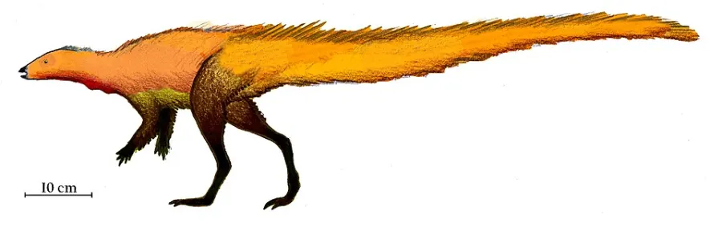
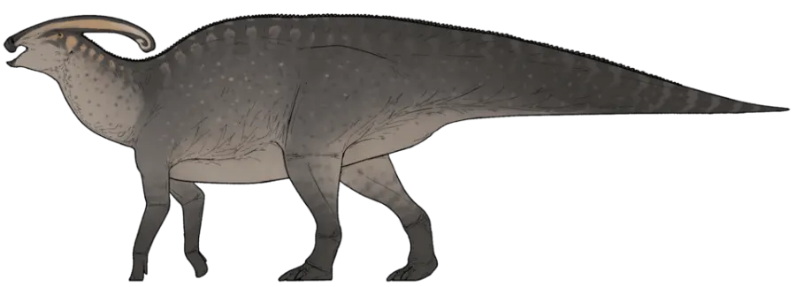
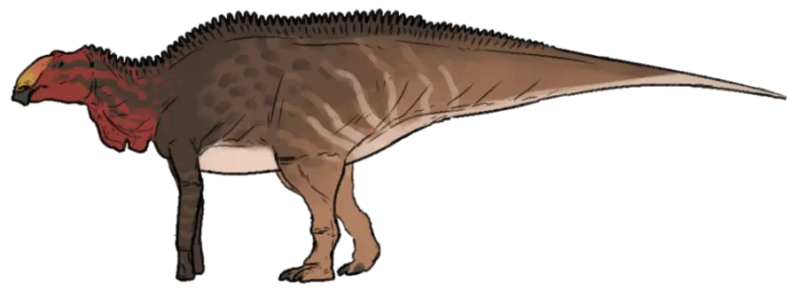
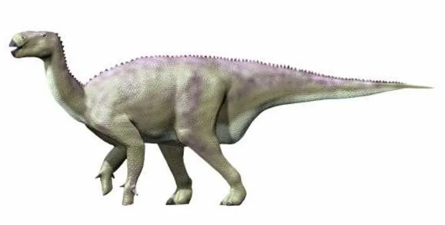

Leaellynasaura
🗣️ On prononce : lé-a-lin-a-so-ra — « le lézard de Leaellyn »
Un petit dinosaure qui vivait près du pôle Sud, dans la nuit de l’hiver !
PIIIP !

Qui était Leaellynasaura ?
Il y a environ 110 millions d’années, l’Australie était encore collée à l’Antarctique, tout près du pôle Sud. Leaellynasaura vivait là : en hiver, le soleil pouvait ne pas se lever pendant des semaines.
Son crâne montre de grandes orbites, et son cerveau de gros lobes optiques, la partie qui sert à voir : il voyait peut-être bien dans la pénombre.
Il a été découvert à Dinosaur Cove, en Australie, par Tom Rich et Patricia Vickers-Rich. Ils lui ont donné le prénom de leur fille, Leaellyn.
On lui a attribué des squelettes au petit corps et à la queue immense, avec plus de 70 vertèbres. Mais les paléontologues ne sont pas tous sûrs que ces squelettes soient bien les siens.
⚡ Son super-pouvoir : Les yeux de la nuit
De grands yeux qui l’aidaient sans doute à se repérer pendant les longues nuits de l’hiver polaire.
Le savais-tu ?
- Il marchait sur ses deux pattes arrière et mangeait des plantes.
- À son époque, il faisait bien plus doux qu’aujourd’hui près du pôle Sud, mais l’hiver restait long et sombre.
- Depuis, l’Australie s’est détachée de l’Antarctique et a lentement glissé vers le nord.
🪪 Carte d’identité
| Nom complet | Leaellynasaura |
|---|---|
| Signification | « le lézard de Leaellyn » |
| Prononciation | lé-a-lin-a-so-ra |
| Période | 🌸 Crétacé |
| Époque précise | Crétacé inférieur |
| A vécu il y a | 113 à 106 millions d’années |
| Famille | 🎺 Hadrosaures et cousins |
| Régime | 🌿 Herbivore — Il ne mange que des plantes : feuilles, fougères, aiguilles de conifères. |
| Où vivait-il ? | Australie |
| Découvert en | 1989, à Dinosaur Cove, Victoria, Australie |
| Découvert par | Tom Rich et Patricia Vickers-Rich |
📏 Comparaison de taille
Voici Leaellynasaura à côté d’un enfant de 1,30 m.
🎮 Envie de jouer ?
Teste tes connaissances sur Leaellynasaura et les autres dinosaures !
À découvrir aussi

Parasaurolophus Le trombone des dinosaures : sa crête servait de trompette ! 🌸 Crétacé 🌿 Herbivore
Maiasaura La « bonne mère » : le premier dinosaure dont on a prouvé qu’il élevait ses petits. 🌸 Crétacé 🌿 Herbivore
Iguanodon L’un des tout premiers dinosaures découverts… avec un pouce en forme de poignard. 🌸 Crétacé 🌿 Herbivore